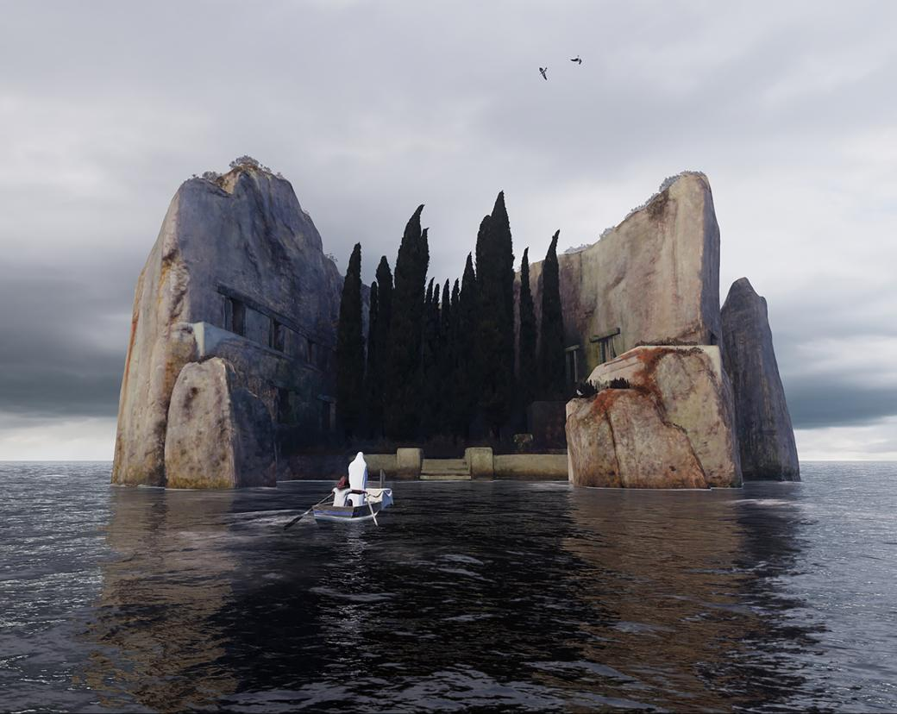
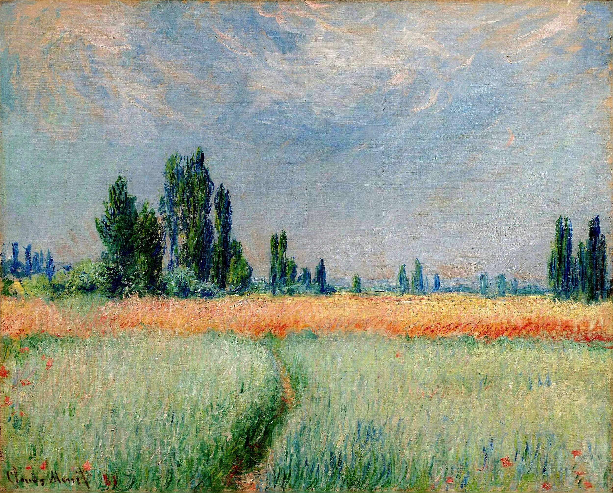
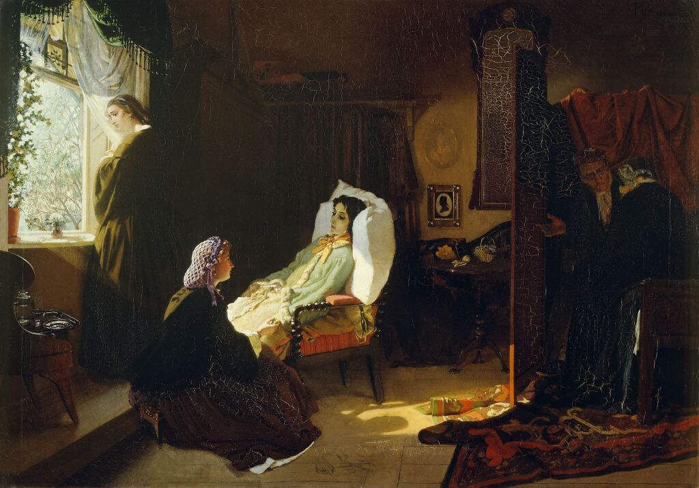
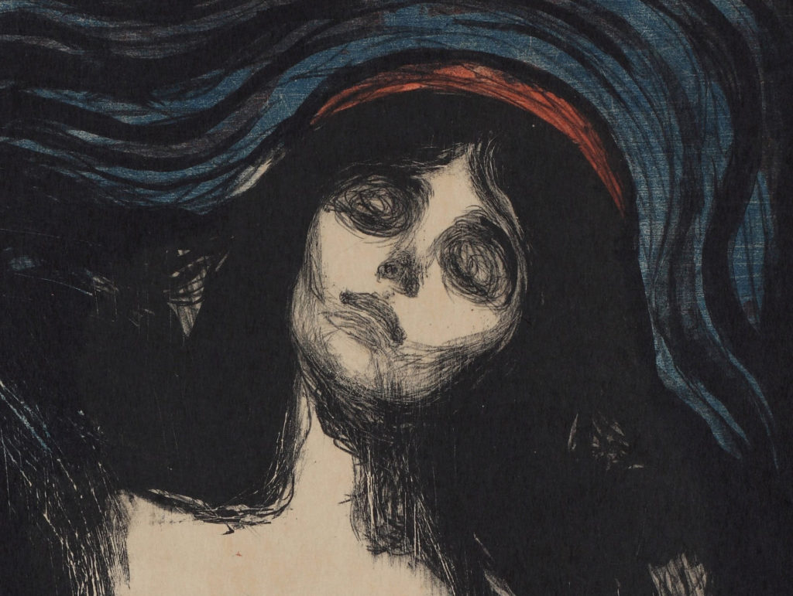
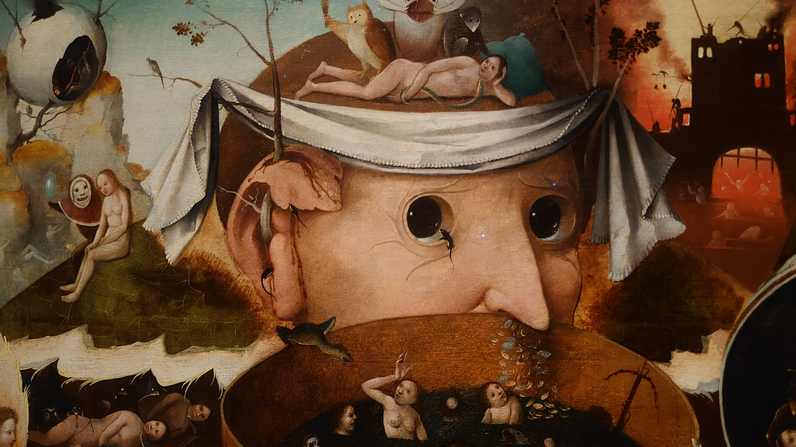
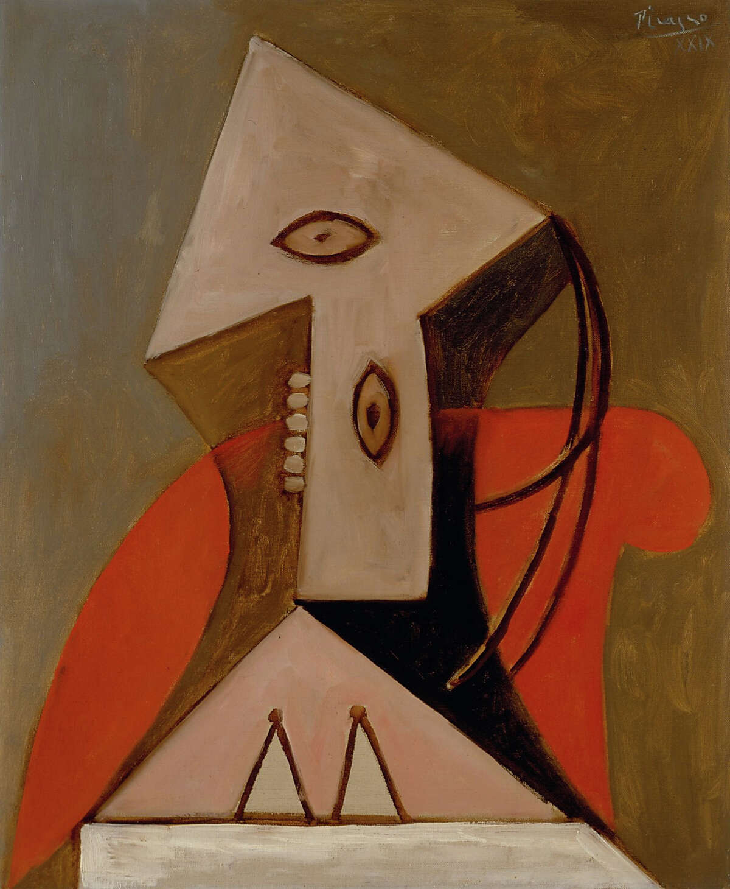
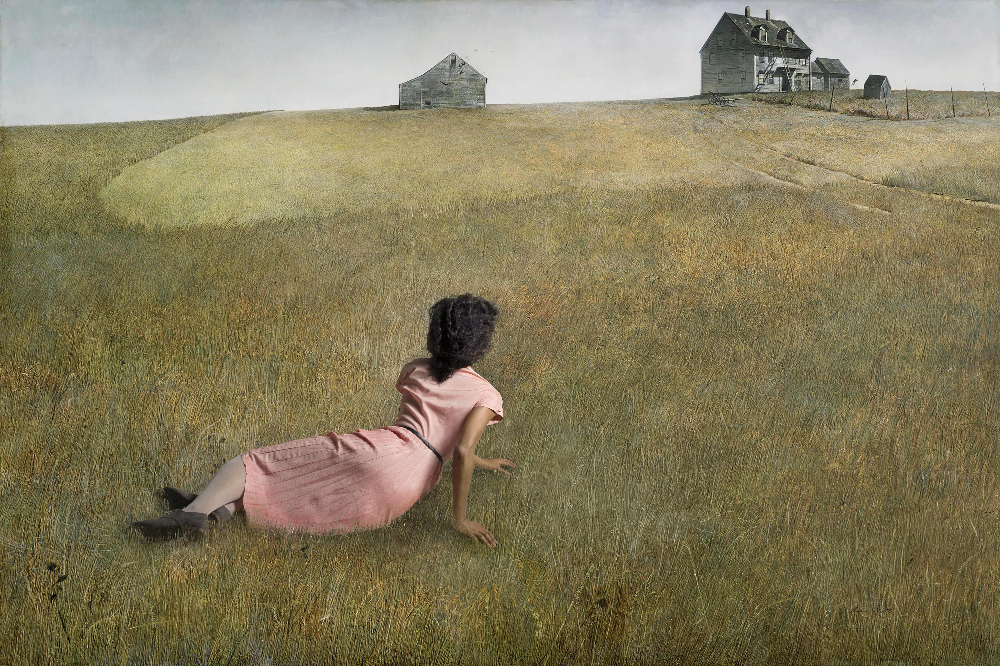
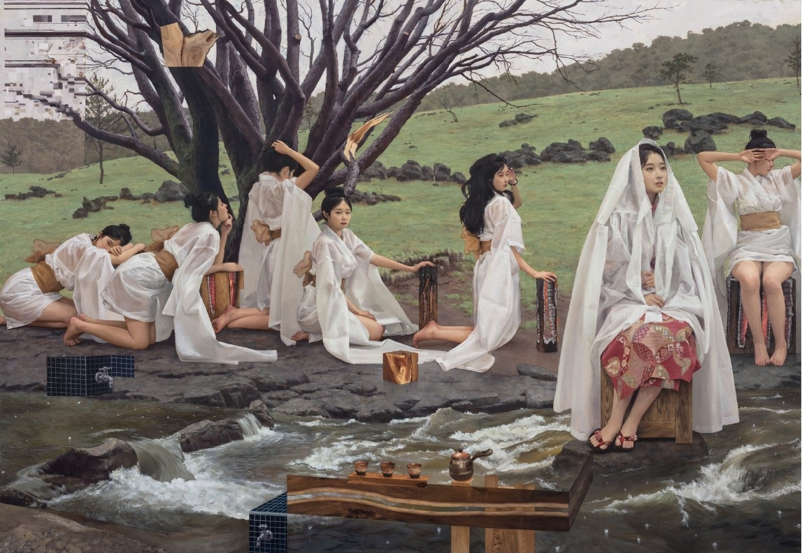

-
Фритрек и нулевой спринт: Подготовка к работе
</могну>
Это было самое начало пути. На этом этапе важно было проникнуться основами и настроиться на учёбу. И, возможно, подумать, как новые знания могут повлиять на ваше будущее.
Остров, где нет ничего и где все только было,
Краем желанным ты кажешься мне потому ли? -
1 спринт: Я — чистый лист
</сигма>
На первых этапах мы работали со страхами и сомнениями, которые часто испытывают новички. Один из них — страх перед чистым листом. Это, конечно же, намного сложнее, чем боязнь куска бумаги. Часто за этим ощущением скрываются более глубокие вопросы: с чего начать? а вдруг будет слишком сложно? что, если я не справлюсь?
Старинная мебель в пыли, да люстры в чехлах, да гардины…
И вдаль отойдешь… А вдали — равнины, равнины -
1 спринт: А если не получится?
</six-seven>
Первый проект — позади! Но это всё ещё самое начало пути. Радость могла быстро померкнуть и смениться ожиданием провала. Или вы, наоборот, могли вдохновиться успехами и поверить в себя.
Где, как обугленные груши,
С деревьев тысячи грачей
Сорвутся в лужи и обрушат
Сухую грусть на дно очей. -
2 спринт: Погоня за идеалом
</черемша>
На этом этапе вы уже достаточно разбирались в основах вёрстки, чтобы понять, как много ещё впереди. Вы могли попытаться погнаться за идеалом и понять, что он недостижим. А, может, вы вовсе и не подвержены перфекционизму и вместо того, чтобы сделать идеально, старались просто сделать.
Умрешь — начнешь опять сначала
И повторится всё, как встарь:
Ночь, ледяная рябь канала,
Аптека, улица, фонарь. -
2 спринт: О тех, кто рядом
</нишево>
Всё это время вы были не одиноки (хотя, возможно, иногда и чувствовали, что одни против целого мира). Вас окружали одногруппники, команда сопровождения и просто близкие люди, которым можно пожаловаться, если очередной макет просто так не поддавался. Осваивать что-то новое легче, когда рядом есть единомышленники, не правда ли?
Веселый вечер в жизни нашей
Запомним, юные друзья;
Шампанского в стеклянной чаше
Шипела хладная струя. -
3 спринт: Обходные стратегии
</сам-решу>
На этом курсе вы постоянно решали разные задачи. В какой-то момент вам могло показаться, что решения просто иссякли. Значит, пришло время посмотреть на задачу под другим углом.
Нет, я не Байрон, я другой,
Еще неведомый избранник -
3 спринт: Когда опускаются руки
</воздухан>
Во время учёбы часто возникает чувство, когда не знаешь, за что хвататься. Вроде и проектную пора сдавать, и задачи хочется порешать, и в теории получше разобраться, и жизнь не забыть пожить. В такие моменты очень нужна концентрация. Вспомните, откуда вы её черпали.
А я здесь в поте и в пыли,
Я, царь земли, прирос к земли! -
«Сейчас я здесь»
</эщкере>
Сейчас вы уже очень много знаете о вёрстке. Но это только начало. Во-первых, впереди ещё много материала про «красотищу». Во-вторых, с окончанием курса учёба не заканчивается. Вёрстка — это целый мир. И этот мир постоянно меняется. Познать его полностью не получится, но это тот случай, когда важен сам процесс познания. Ведь часто путь — и есть результат.
На свете счастья нет, но есть покой и воля.
Давно завидная мечтается мне доля —
Давно, усталый раб, замыслил я побег
В обитель дальную трудов и чистых нег.